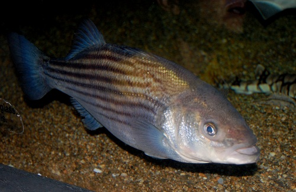

 Researchers at the Center for Quantitative Fisheries Ecology at Old Dominion University in collaboration with the Virginia Marine Resources Commission annually collect Striped Bass (Morone saxatilis) from Virginia waters of the Atlantic Ocean for age assessments. The total lengths of 1201 Stiped Bass collected in 2003 and the ages estimated from otoliths for as many as 10 fish per 1 inch length interval are recorded in StripedBass3.csv (view, download, meta)
- Separate the observed data into age- and length-samples. Construct an observed age-length key. [This step would have been accomplished in this exercise.]
- Use the “classical” method to estimate the age distribution (with standard errors) for all sampled fish.
- How many fish are estimated to be age 8?
- How many fish are estimated to be age 14?
- Plot the age distribution for all fish.
- Use the “classical” method to estimate the mean length-at-age (with standard deviations) for all sampled fish.
- What is the mean TL of age-9 fish?
- Plot the length-at-age with the mean length-at-age superimposed for all fish.
- Compare your results to someone else’s results (or repeat the steps above). Did you both get the exact same results? Why or why not? If not, how different were they?
- Compare your results using the “classical” method here to your results from using the Isermann and Knight (2005) method in this exercise (assuming that you completed that exercise).
from Derek H. Ogle , created 08-Nov-15, updated 08-Nov-15, Comments/Suggestions.